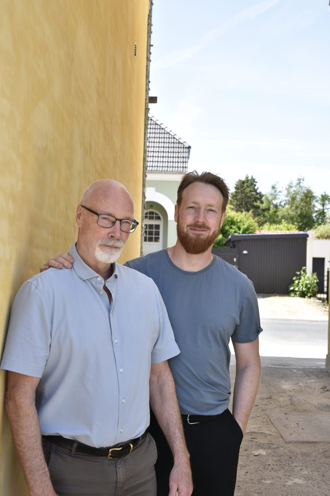
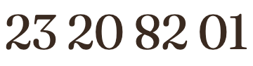

Faaborg
Trippelhusene
Frits Jørgensens sociale boligbyggeri fra 1918 — gennemrestaureret med nye badeværelser og køkkener, ægte trægulve, synlige bjælker, haveanlæg og ladestandere.
Vi er en far og en søn, der køber smukke ejendomme i Faaborg og Odense, sætter dem grundigt i stand og lejer dem ud som hjem.
Om Johansen Bolig
Johansen Bolig drives af Jan Due Johansen og hans søn Niels Due Johansen. Vi startede vores rejse ved et tilfælde, da vi fik muligheden for at købe Frits Jørgensens Trippelhuse i Faaborg.
Siden har vi restaureret de arkitekttegnede huse fra 1918 til 15 moderne lejligheder og renoveret alt det udvendige med tanke på det oprindelige. I dag er alle lejligheder i Trippelhusene lejet ud, og vi har sidenhen erhvervet Oluf Bagers Gade 40 i Odense.
Vi er en lille udlejer, og det kan man mærke. Du taler med os direkte — og vi står selv inde for håndværket bag de vægge, du kommer til at bo mellem.

Jan Due Johansen og Niels Due Johansen foran Trippelhusene i Faaborg.
Vores ejendomme
Faaborg
Frits Jørgensens sociale boligbyggeri fra 1918 — gennemrestaureret med nye badeværelser og køkkener, ægte trægulve, synlige bjælker, haveanlæg og ladestandere.
Odense C
Tre boliglejemål på 100, 100 og 75 m² samt et erhvervslejemål på 60 m² — attraktivt beliggende i et smukt og behageligt kvarter tæt på Odense C.
Ledige lejligheder
Trippelhusene, Faaborg
2- og 3-værelseslejligheder
Oluf Bagers Gade 40, Odense
3 boliglejemål · 1 erhvervslejemål
Send os en besked, så tager vi kontakt, når der bliver en bolig fri, der passer til dig.
Skriv eller ring, hvis du vil skrives op eller høre om en bolig. Vi svarer selv.

Faaborg · opført 1918
Fra bevaringsværdigt forfald til moderne lejligheder — uden at huset mistede sin karakter.
Historien
Trippelhusene blev opført i 1918 efter tegninger af arkitekt Frits Jørgensen. Tanken var enkel og meget moderne for sin tid: ordentlige boliger til almindelige familier, bygget med samme omhu som de finere huse i Faaborg — gode proportioner, håndværksmæssige detaljer og lys i alle rum.
Da vi overtog husene, var de bevaringsværdige, men slidte. Vi har gennemrestaureret dem indefra og ud: nye installationer, nye badeværelser og køkkener, istandsat træværk og bevarede bjælker. Det, der kunne redde, er reddet. Det, der skulle fornyes, er fornyet i samme ånd.
Resultatet er lejligheder, hvor man mærker husets alder — og samtidig har varme i gulvet på badeværelset og opvaskemaskine i køkkenet.
1918
Husene opføres som socialt boligbyggeri efter Frits Jørgensens tegninger.
Overtagelsen
Husene gives væk for et symbolsk beløb på én krone, da de er helt nedslidte og stadig kun har bad og toilet i kælderen.
Restaureringen
17 millioner kroner investeres i tag, installationer, køkkener, badeværelser og haveanlæg.
2025
Alle lejligheder klar til benyttelse.
Lejligheden inkluderer
01
Stort, nyt flisebadeværelse med egen vaskemaskine og tørretumbler — og varme i gulvet.
02
Nyt køkken med alt i hvidevarer, herunder opvaskemaskine.
03
Ægte trægulve, synlige bjælker og træværk med detaljer.
04
Haveanlæg med flere terrasser til fælles brug.
05
Parkeringspladser med ladestander til elbil.
06
Beboerrum til fælles brug — og et tæt sammenhold mellem naboerne i ejendommen.
Galleri
Medieomtale
„Fra bevaringsværdigt skrot til slot for 17 millioner.“
Fyens Stiftstidende
fyens.dk
Om beslutningen, økonomien — og at kautionere med alt, hvad man ejer.
Læs artiklenfyens.dk
Før og efter — og meldingen om, at alle lejligheder er lejet ud.
Læs artiklenDet Rigtige Faaborg
Om købet for én krone, de store badeværelser og den varme modtagelse fra naboerne på Odensevej.
Læs artiklenHvis du ønsker en lejlighed i Trippelhusene, kan du skrive dig op ved at kontakte os.
Odense C
Tre boliglejemål og et erhvervslejemål i et af Odenses smukkeste kvarterer — få minutters gang fra byens centrum.
Om ejendommen
Oluf Bagers Gade 40 rummer tre boliglejemål på henholdsvis 100, 100 og 75 kvadratmeter samt et erhvervslejemål på 60 kvadratmeter. Lejlighederne er rummelige med god loftshøjde og lys fra flere sider — plads til både familie, hjemmearbejdsplads og gæster.
Ejendommen ligger attraktivt tæt på Odense C, i et behageligt og smukt område, hvor gaderne er gamle og stille, men alt ligger inden for gåafstand. Det er kvarteret, hvor man kan gå til togstationen med en kuffert og hjem igen med indkøb fra torvet.
Status
{{ olufStatus }}
Kvarteret
Odense C
Banegården og busterminalen ligger få minutter væk — under to timer til København.
Den gamle by
Brostensgader, Domkirken og H.C. Andersen Kvarteret som nærmeste naboer.
Kultur og café
Brandts, biblioteket, restauranter og indkøb — alt sammen uden at tage bilen.
Grønt tæt på
Munke Mose og åstien ligger lige om hjørnet, når dagen skal luftes ud.
Galleri
Status lige nu: {{ olufStatus }}. Skriv til os, så kontakter vi dig, når et lejemål bliver ledigt.